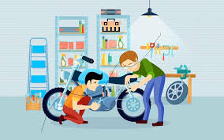
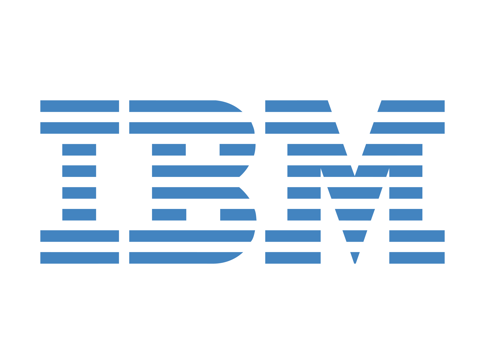

2329
Siswa Aktif
SMK Negeri Tengaran meluluskan banyak siswa yang tak hanya bekerja namun juga berwirausaha dan sekolah tinggi..
SMK Negeri Tengaran mendapat beberapa prestasi baik dari tingkat lokal sampai internasional ...
SMK Negeri Tengaran memiliki lingkungan belajar yang nyaman serta kelengkapan sarana dan prasarana ...
Kurikulum SMK Negeri Tengaran menerapkan Kurikulum Merdeka untuk semua tingkat/kelasnya ...
SMK Negeri Tengaran telah menerapkan beberapa budaya industri di lingkungan sekolah ...
Pengembangan Perangkat Lunak & Gim. Fokus pada coding, web, dan mobile apps.
Siswa: 120
Lab: 4 Ruangan
Teknik Jaringan Komputer & Telekomunikasi. Ahli dalam infrastruktur server dan jaringan.
Siswa: 115
Lab: 3 Ruangan
Seni Kuliner & Tata Boga. Menciptakan tenaga profesional di bidang hospitality dan restoran.
Siswa: 115
Dapur: 3 Standar Industri
Desain dan Produksi Busana. Fokus pada kreativitas fashion dan teknik menjahit modern.
Siswa: 90
Studio: 2 Workshop

Teknik Kendaraan Ringan. Mempelajari mesin, kelistrikan mobil, dan manajemen bengkel.
Siswa: 130
Bengkel: 1 Unit Produksi
Siswa Aktif
Keterserapan
Akreditasi
Mitra Kerja
Kelola status dan administrasi siswa secara real-time
| No | Foto | Nama | Kelas | Status | Aksi |
|---|---|---|---|---|---|
| 1 |
|
putra | X PPLG 4 | Aktif | |
| 2 |
|
nana | X PPLG 2 | Izin | |
| 3 |
|
irfan | X PPLG 3 | Tidak Hadir |
Kelola kehadiran siswa secara real-time
Belajar bersama mentor luar negeri yang berpengalaman
Mentor Web Development
pembuatan situs web dari sisi front-end (HTML,CSS,JS), back-end (PHP,Node.js, Python), hingga full-stack.
Mentor Back-End Developer
mengelola logika, server, dan basis data (database) agar website berfungsi di balik layar

Mentor Website Builder
menggunakan platform seperti WordPress, Wix, atau Shopify untuk membangun situs tanpa koding teknis mendalam
Mentor UI/UX Design
fokus pada estetika, tata letak, warna, dan pengalaman pengguna (UX) menggunakan alat seperti Figma atau Adobe XD
Membangun sinergi strategis bersama mitra terpercaya untuk menghadirkan solusi inovatif dan berkelanjutan di setiap langkah kami.



Hubungi kami untuk informasi lebih lanjut
Jl. Merdeka Raya, Jakarta Selatan
+85923454545
smkdigital@gmail.com